오감도는 1934년에 발표된 연작 시로, 제목은 원래 '조감도'에서 '조'가
'오'로 잘못 표기된 것에서 비롯되었다는 설이 있습니다.
2024년 9월, GIST 연구팀은 이상의 시 <오감도>에 물리학을 접목시켜
새로운 해석법을 제시합니다. 숫자판을 원기둥으로 변환하고 도넛 형태로
읽었을 때 정상적인 수열로 해석됩니다.
도넛 내부는 우리가 사는 세상이고, 표면을 지나는 무수히 많은 선은
내부의 상태를 진단할 수 있는 도구라는 것입니다.
Ogamdo is a series of poems published in 1934. One theory suggests
that its title originated from a misprint of '鳥瞰圖' (bird's-eye view),
with the character '鳥' mistakenly replaced by '烏'.
In September 2024, a research team at GIST introduced a new
interpretation of Yi Sang's <Ogamdo> through physics. By transforming
the numerical grid into a cylinder and then a torus, the numbers
can be read as a regular sequence.
The interior of the torus represents the world we live in, while
the countless lines running across its surface serve as tools
for diagnosing the conditions within.
十三人의兒孩가道路로疾走하오. (길은막달은골목이適當하오.) 第一의兒孩가무섭다고그리오. 第二의兒孩도무섭다고그리오. 第三의兒孩도무섭다고그리오. 第四의兒孩도무섭다고그리오. 第五의兒孩도무섭다고그리오. 第六의兒孩도무섭다고그리오. 第七의兒孩도무섭다고그리오. 第八의兒孩도무섭다고그리오. 第九의兒孩도무섭다고그리오. 第十의兒孩도무섭다고그리오. 第十一의兒孩가무섭다고그리오. 第十二의兒孩도무섭다고그리오. 第十三의兒孩도무섭다고그리오. 十三人의兒孩는무서운兒孩와무서워하는兒孩와그러케뿐이모혓소. (다른事情은업는것이차라리나앗소) 그中에一人의兒孩가무서운兒孩라도좃소. 그中에二人의兒孩가무서운兒孩라도좃소. 그中에二人의兒孩가무서워하는兒孩라도좃소. 그中에一人의兒孩가무서워하는兒孩라도좃소. (길은뚤닌골목이라도適當하오.) 十三人의兒孩가道路로疾走하지아니하야도좃소.
나의아버지가나의겨테서조을적에나는나의아버지가되고또나는나의아버지의아버지가되고그런데도나의아버지는나의아버지대로나의아버지인데어쩌자고나는작고나의아버지의아버지의아버지의……아버지가되니나는웨나의아버지를껑충뛰어넘어야하는지나는웨드듸어나와나의아버지와나의아버지의아버지와나의아버지의아버지의아버지노릇을한꺼번에하면서살아야하는것이냐
싸홈하는사람은즉싸홈하지아니하든사람이고또싸홈하는사람은싸홈하지아니하는사람이엇기도하니까싸홈하는사람이싸홈하는구경을하고십거든싸홈하지아니하든사람이싸홈하는것을구경하든지싸홈하지아니하는사람이싸홈하는구경을하든지싸홈하지아니하든사람이나싸홈하지아니하는사람이싸홈하지아니하는것을구경하든지하얏으면그만이다
患者의容態에關한問題. １２３４５６７８９０・ １２３４５６７８９・０ １２３４５６７８・９０ １２３４５６７・８９０ １２３４５６・７８９０ １２３４５・６７８９０ １２３４・５６７８９０ １２３・４５６７８９０ １２・３４５６７８９０ １・２３４５６７８９０ ・１２３４５６７８９０ 診斷 0・1 26・10・1931 以上 責任醫師 李 箱
시제4호 인터랙션 보기 ↗某後左右를除하는唯一의痕跡에잇서서 翼殷不逝 目大不覩 胖矮小形의神의眼前에我前落傷한故事를有함. 臟腑타는것은浸水된畜舍와區別될수잇슬는가.
시제5호의 도형은 원문 자료에서 확인할 수 있습니다.
鸚鵡 ※ 二匹 二匹 ※ 鸚鵡는哺乳類에屬하느니라. 내가二匹을아아는것은내가二匹을아알지못하는것이니라. 勿論나는希望할것이니라. 鸚鵡 二匹 『이小姐는紳士李箱의夫人이냐』『그러타』 나는거기서鸚鵡가怒한것을보앗느니라. 나는붓그러워서얼골이붉어젓섯겠느니라. 鸚鵡 二匹 二匹 勿論나는追放당하얏느니라. 追放당할것까지도업시自退하얏느니라. 나의體軀는中軸을喪尖하고또相當히蹌踉하야그랫든지나는微微하게涕泣하얏느니라. 『저기가저기지』『나』『나의—아—너와나』 『나』 sCANDAL이라는것은무엇이냐. 『너』『너구나』 『너지』『너다』『아니다 너로구나』 나는함뿍저저서그래서獸類처럼逃亡하얏느니라. 勿論그것을아아는사람或은보는사람은업섯지만그러나果然그럴는지그것조차그럴는지.
久遠謫居의地의一枝・一枝에피는顯花・特異한四月의花草・三十輪・三十輪에前後되는兩側의明鏡・萌芽와갓치戱戱하는地平을向하야금시금시落魄하는滿月・淸㵎의氣가운데滿身瘡痍의滿月이劓刑當하야渾淪하는・謫居의地를貫流하는一封家信・나는僅僅히遮戴하얏드라・濛濛한月芽・靜謐을蓋掩하는大氣圈의遙遠・巨大한困憊가운데의一年四月의空洞・槃散顚倒하는星座와星座의千裂된死胡同을跑逃하는巨大한風雪・降霾・血紅으로染色된岩鹽의粉碎・나의腦를避雷針삼아沈下搬過되는光彩淋漓한亡骸・나는塔配하는독사와가치地平에植樹되어다시는起動할수업섯드라・天亮이올때까지
第一部試驗 手術臺 一 水銀途沫平面鏡 一 氣壓 二倍의平均氣壓 溫度 皆無 爲先麻醉된正面으로부터立體와立體를위한立體가具備된全部를平面鏡에映像식힘. 平面鏡에水銀을現在와反對側面에途沫移轉함. (光線侵入防止에注意하야)徐徐히麻醉를解毒함. 一軸鐵筆과一張白紙를支給함. (試驗擔任人은被試驗人과抱擁함을絶對忌避할것) 順次手術室로부터被試驗人을解放함. 翌日. 平面鏡의縱軸을通過하야平面鏡을二片에切斷함. 水銀塗沫二回. ETC 아즉그滿足한結果를收得치못하얏슴. 第二部試驗 直立한平面鏡 一 助手 數名 野外의眞實을選擇함. 爲先麻醉된上肢의尖端을鏡面에附着식힘. 平面鏡의水銀을剝落함. 平面鏡을後退식힘. (이때映像된上肢는반듯이硝子를無事通過하겟다는것으로假設함) 上肢의終端까지. 다음水銀途沫. (在來面에)이瞬間公轉과自轉으로부터그眞空을降車식힘. 完全히二個의上肢를接受하기까지. 翌日. 硝子를前進식힘. 連하야水銀柱를在來面에途沫함 (上肢의處分)(혹은滅形)其他. 水銀途沫面의變更과前進後退의重複等. ETC 以下未詳
每日가치列風이불드니드듸여내허리에큼직한손이와닷는다. 恍惚한指紋골작이로내땀내가스며드자마자쏘아라. 쏘으리로다. 나는내消化器管에묵직한銃身을늣기고내담으른입에맥근맥근환銃口를늣긴다. 그리드니나는銃쏘으듯키눈을감으며한방銃彈대신에나는참나의입으로무엇을내여배앗헛드냐.
찌저진壁紙에죽어가는나비를본다. 그것은幽界에絡繹되는秘密한通話口다. 어느날거울가운데의鬚髥에죽어가는나비를본다. 날개축처어진나비는입김에어리는가난한이슬을먹는다. 通話口를손바닥으로꼭막으면서내가죽으면안젓다이러서듯키나비도날러가리라. 이런말이決코밧그로새여나가지는안케한다.
그사기컵은내骸骨과흡사하다. 내가그컵을손으로꼭쥐엿슬때내팔에서는난데업는팔하나가接木처럼도치드니그팔에달린손은그사기컵을번적들어마루바닥에메여부딧는다. 내팔은그사기컵을死守하고잇스니散散히깨어진것은그럼그사기컵과흡사한내骸骨이다. 가지낫든팔은배암과갓치내팔로기어들기前에내팔이或움즉엿든들洪水를막은白紙는찌저젓으리라. 그러나내팔은如前히그사기컵을死守한다.
때무든빨내조각이한뭉텅이空中으로날너떠러진다. 그것은흰비닭이의떼다. 이손바닥만한한조각하늘저편에戰爭이끗나고平和가왓다는宣傳이다. 한무덕이비닭이의떼가깃에무든때를씻는다. 이손바닥만한하늘이편에방맹이로흰비닭이의떼를따려죽이는不潔한戰爭이始作된다. 空氣에숫검정이가지저분하게무드면흰비닭이의떼는또한번이손바닥만한하늘저편으로날아간다.
내팔이면도칼을든채로끈어저떨어젓다. 자세히보면무엇에몹시威脅당하는것처럼샛팔앗타. 이럿케하야일허버린내두개팔을나는燭臺세음으로내방안에裝飾하야노앗다. 팔은죽어서도오히려나에게怯을내이는것만갓다. 나는이런얇다란禮儀를花草盆보다도사량스레녁인다.
古城압풀밧이잇고풀밧우에나는내帽子를버서노앗다. 城우에서나는내記憶에꽤묵어운돌을매어달아서는내힘과距離껏팔매질첫다. 抛物線을逆行하는歷史의슯흔울음소리. 문득城밋내帽子겻헤한사람의乞人이장승과가티서잇는것을나려다보앗다. 乞人은城밋헤서오히려내우에잇다. 或은綜合된歷史의亡靈인가. 空中을向하야노힌내帽子의깁히는切迫한하늘을불은다. 별안간乞人은慄慄한風彩를허리굽혀한개의돌을내帽子속에치뜨러넛는다. 나는벌서氣絶하얏다. 심장이頭蓋骨속으로옴겨가는地圖가보인다. 싸늘한손이내니마에닷는다. 내니마에는싸늘한손자옥이烙印되여언제까지지어지지안앗다.
1 나는거울업는室內에잇다. 거울속의나는역시外出中이다. 나는至今거울속의나를무서워하며떨고잇다. 거울속의나는어디가서나를어떠케하랴는陰謨를하는中일가. 2 罪를품고식은寢床에서잣다. 確實한내꿈에나는缺席하얏고義足을담은軍用長靴가내꿈의白紙를더럽혀노앗다. 3 나는거울잇는室內로몰래들어간다. 나를거울에서解放하려고. 그러나거울속의나는沈鬱한얼골로同時에꼭들어온다. 거울속의나는내게未安한뜻을傳한다. 내가그때문에囹圄되여잇듯키그도나때문에囹圄되여떨고잇다. 4 내가缺席한나의꿈. 내僞造가登場하지안는내거울. 無能이라도조흔나의孤獨의渴望者다. 나는드듸여거울속의나에게自殺을勸誘하기로決心하얏다. 나는그에게視野도업는들窓을가르치엇다. 그들窓은自殺만을爲한들窓이다. 그러나내가自殺하지아니하면그가自殺할수업슴을그는내게가르친다. 거울속의나는不死鳥에갓갑다. 5 내왼편가슴心臟의位置를防彈金屬으로掩蔽하고나는거울속의내왼편가슴을견우어拳銃을發射하얏다. 彈丸은그의왼편가슴을貫通하얏스나그의心臟은바른편에잇다. 6 模型心臟에서붉은잉크가업즐러젓다. 내가遲刻한내꿈에서나는極刑을바닷다. 내꿈을支配하는者는내가아니다. 握手할수조차업는두사람을封鎖한巨大한罪가잇다.